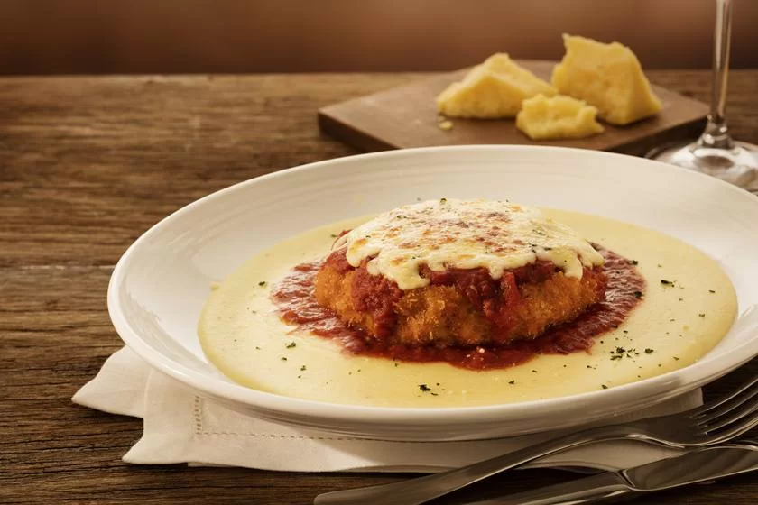

Polpettone con Polenta

Description
The aroma of sizzling onions and garlic fills the kitchen as you brown the base for your rich polpettone con polenta. Ground beef mingled with Parmesan cheese, sun-dried tomatoes, and fresh herbs forms a savory loaf, nestled in a bed of creamy polenta infused with Parmesan and rosemary. A halved hard-boiled egg surprises in the center, adding a delightful gooey surprise with each bite. Baked to golden perfection, the polpettone is gently sliced and plated over the steaming polenta, ready to be showered with a vibrant tomato sauce dotted with fresh basil. This hearty Italian comfort food is sure to warm you from the inside out, offering a satisfying blend of textures and flavors in every spoonful.
Ingredients
For the Polpettone:
- 500g ground beef (choose a blend with some fat for flavor)
- 50g grated Parmesan cheese
- 1/2 cup finely chopped sun-dried tomatoes
- 1/4 cup chopped parsley
- 1 clove garlic, minced
- Salt, pepper, and a pinch of red pepper flakes
For the Filling:
For the Polenta:
- 4 cups water
- 1 cup polenta
- Salt and pepper
- Generous handful of grated Parmesan cheese
- Rosemary sprigs (fresh or dried)
- Salt, pepper, and a pinch of red pepper flakes
For the Sauce:
- Your favorite tomato sauce
- Fresh basil leaves
Steps
Preparing the Polpettone
- Combine ground beef, Parmesan, sun-dried tomatoes, parsley, garlic, and seasonings in a large bowl
- Mix well and form into a loaf
Preparing the Polenta
- Bring water to a boil in a pot
- Slowly whisk in polenta and simmer for 20 minutes, stirring occasionally
- Season with salt, pepper, and Parmesan
- Add rosemary sprigs
Preparing the Filling
- Hard-boil and slice eggs in half lengthwise
Combining, Cooking and Assembling Everything
- Preheat oven to 375°F (190°C)
- Spread half of the polenta in a baking dish
- Top with meatloaf, then egg halves
- Cover with remaining polenta
- Bake for 45-50 minutes, or until the internal temperature of the meatloaf reaches 160°F (71°C)
- Let rest for 10 minutes before slicing
- Drizzle with tomato sauce, garnish with basil, and enjoy!
Home